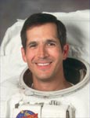

Lyndon B. Johnson Space Center
Houston, Texas 77058
|
National Aeronautics and Space Administration Lyndon B. Johnson Space Center Houston, Texas 77058 |
 |
Biographical Data |
||
John Bennett Herrington (Commander, USN, Ret.)
NASA Astronaut (Former)
PERSONAL DATA: Born September 14, 1958 in Wetumka, Oklahoma. He grew up in Colorado Springs, Colorado, Riverton, Wyoming, and Plano, Texas. He has two children. He enjoys rock climbing, snow skiing, running, cycling. His parents, Mr. and Mrs. James E. Herrington, reside in Spicewood, Texas. His brother, James E. Herrington, Jr., resides in Sandy Spring, Maryland. His sister, Jennifer D. Monshaugen, resides in Spicewood, Texas.
EDUCATION: Graduated from Plano Senior High School, Plano, Texas, in 1976; received a bachelor of science degree in applied mathematics from the University of Colorado at Colorado Springs, in 1983, and a master of science degree in aeronautical engineering from the U.S. Naval Postgraduate School in 1995.
ORGANIZATIONS: Life member of the Association of Naval Aviation, University of Colorado at Colorado Springs Alumni Association. Sequoyah Fellow, American Indian Science and Engineering Society.
SPECIAL HONORS: Distinguished Naval Graduate from Aviation Officer Candidate School, Pensacola, Florida, in 1984. Awarded Navy Commendation Medal, Navy Meritorious Unit Commendation, Coast Guard Meritorious Unit Commendation, Coast Guard Special Operations Service Ribbon, National Defense Medal, Sea Service Deployment Ribbons (3), and various other service awards.
EXPERIENCE: Herrington received his commission from Aviation Officer Candidate School in March 1984 and was designated a Naval Aviator in March 1985. He reported to Patrol Squadron Thirty-One (VP-31) at the Moffett Field Naval Air Station, Mountain View, California for initial training in the P-3C Orion. His first operational assignment was with Patrol Squadron Forty-Eight (VP-48) where he made three operational deployments, two to the Northern Pacific based from Naval Air Station Adak, Alaska and one to the Western Pacific based from the Naval Air Station Cubi Point, Republic of the Philippines. While assigned to VP-48, Herrington was designated a Patrol Plane Commander, Mission Commander, and Patrol Plane Instructor Pilot. Following completion of his first operational tour, Herrington then returned to VP-31 as a Fleet Replacement Squadron Instructor Pilot. While assigned to VP-31 he was selected to attend the U.S. Naval Test Pilot School in Patuxent River, Maryland in January 1990. After graduation in December, 1990, he reported to the Force Warfare Aircraft Test Directorate as a project test pilot for the Joint Primary Aircraft Training System. Herrington conducted additional flight test assignments flying numerous variants of the P-3 Orion as well as the T-34C and the DeHavilland Dash 7. Following his selection as an Aeronautical Engineering Duty Officer, Herrington reported to the U.S. Naval Postgraduate School where he completed a master of science degree in aeronautical engineering in June 1995. Herrington was assigned as a special projects officer to the Bureau of Naval Personnel Sea Duty Component when selected for the astronaut program.
He has logged over 3,800 flight hours in over 30 different types of aircraft.
NASA EXPERIENCE: Selected by NASA in April 1996, Herrington reported to the Johnson Space Center in August 1996. He completed two years of training and evaluation, and is qualified for flight assignment as a mission specialist. Herrington was assigned to the Flight Support Branch of the Astronaut Office where he served as a member of the Astronaut Support Personnel team responsible for Shuttle launch preparations and post-landing operations. He flew on STS-113 logging over 330 hours in space, including 3 EVAs totaling 19 hours and 55 minutes. Herrington retired from the Navy and NASA in July 2005 and currently works for Rocketplane Limited.
SPACE FLIGHT EXPERIENCE: STS-113 Endeavour (November 23-Dec 7, 2002) was the sixteenth Shuttle mission to visit the International Space Station. Mission accomplishments included the delivery of the Expedition-Six crew, the delivery, installation and activation of the P1 Truss, and the transfer of cargo from Shuttle to the Station. During the mission Herrington performed three EVAs totaling 19 hours and 55 minutes. STS-113 brought home the Expedition-Five crew from their 6-month stay aboard the Station. Mission duration 13 days, 18 hours and 47 minutes.
AUGUST 2005